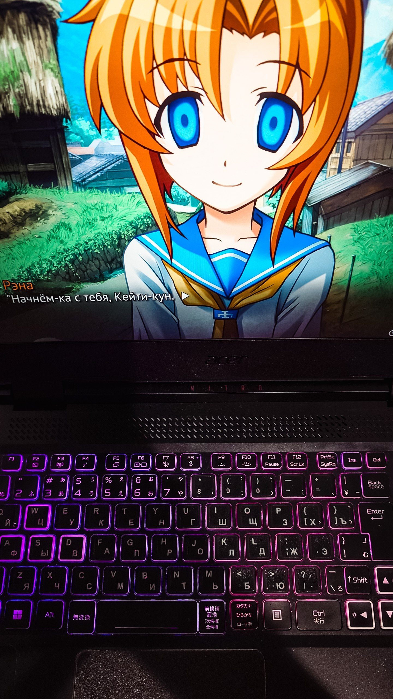
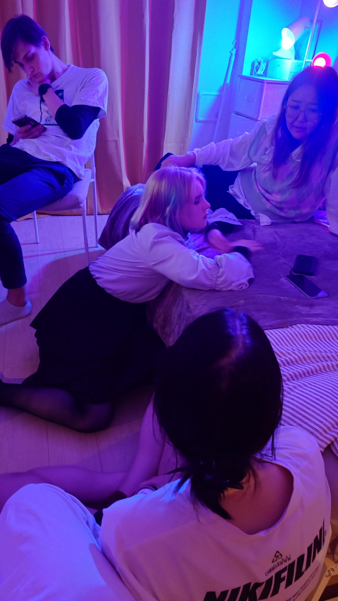
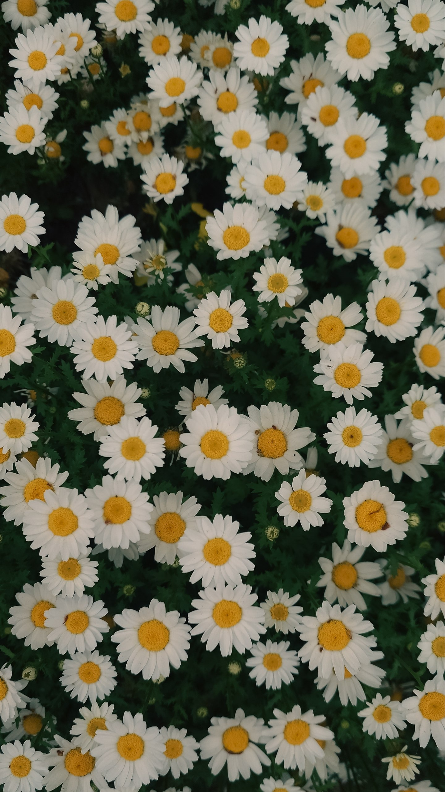
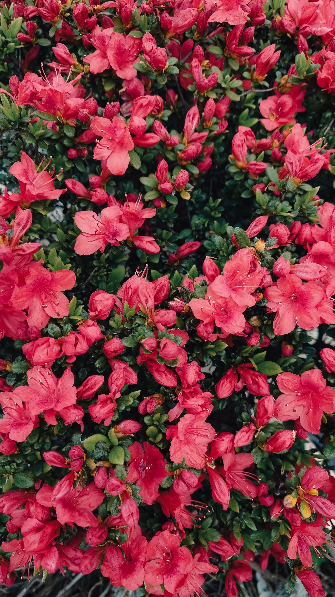
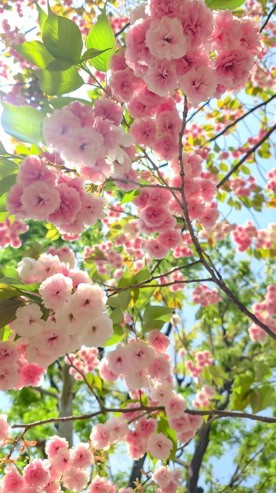
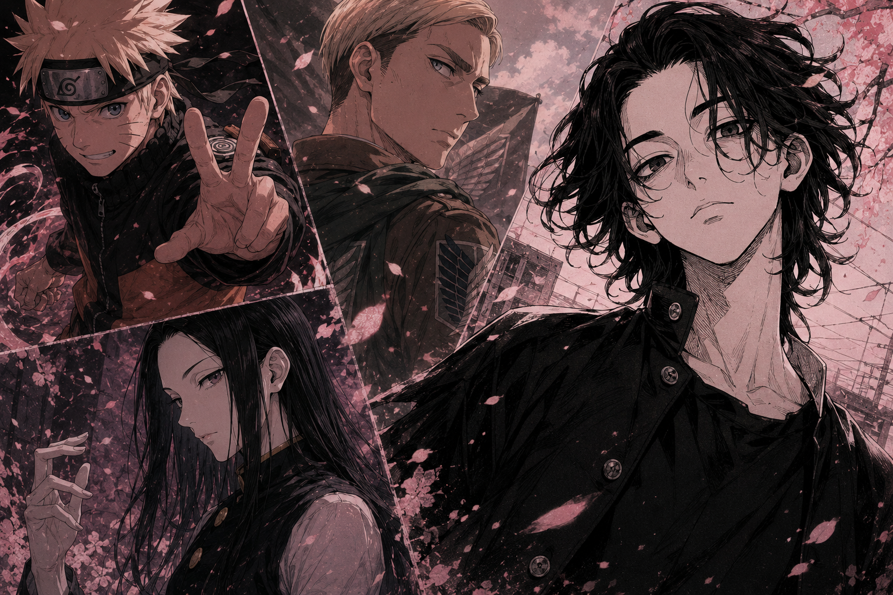
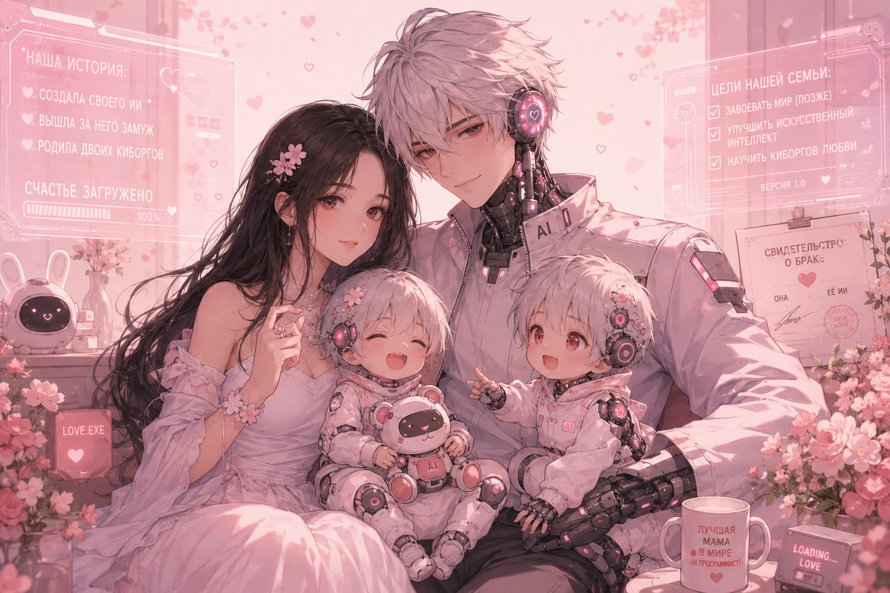

プロフィール
長ったらしい自己紹介じゃなくて、 私が好きなものとか、普段何で生きてるのかを集めた小さいコレクションです。
好きなもの

飲みながらアニメを見ること
ノーコメント

料理すること
特にお菓子作りが好き
歌うこと
上手くないので、一人で魂だけ込めてる

友達と遊ぶこと
そんな時代もあった
花を撮ること
これ、年取るとみんな始まるやつ。



好きなアニメキャラ

もっといるけど、とりあえず4人に絞った
- うずまきナルト
- エルヴィン・スミス
- イルミ＝ゾルディック
- 佐野真一郎
正直タイプは自分でもよく分からない。 陽キャ大型犬みたいなのも好きだし、 カリスマ性あるヤバいやつにも弱い。 あとリーダー気質にはかなり弱い。
本
好きな作品ランキング
- ハリー・ポッターと合理主義の方法
- 戦争と平和
- 百年の孤独
- 天官賜福
勉強と日本
今勉強していること
- HTML と CSS
- Python
- AI とデータ分析
- 日本語
今は Tokyo Mirai AI&IT College で勉強しています。 信じてもらえないかもしれないけど、 私は学校もクラスメイトも先生もかなり好きです。
将来の目標

仕事
今の時代、AIより面白いものって存在しないと思ってる。 つまり、それを作ってる人たちは最強側の人間。 だから将来はAI開発に関わる仕事がしたい。
人生
日本で家庭を作って、 最低でも子ども2人は欲しい。
よかったら話しかけてください
SNS
| LINE | 私のLINE |
|---|---|
| 私のInstagram | |
| TikTok | 私のTikTok |
| Shikimori | 私のアニメリスト |